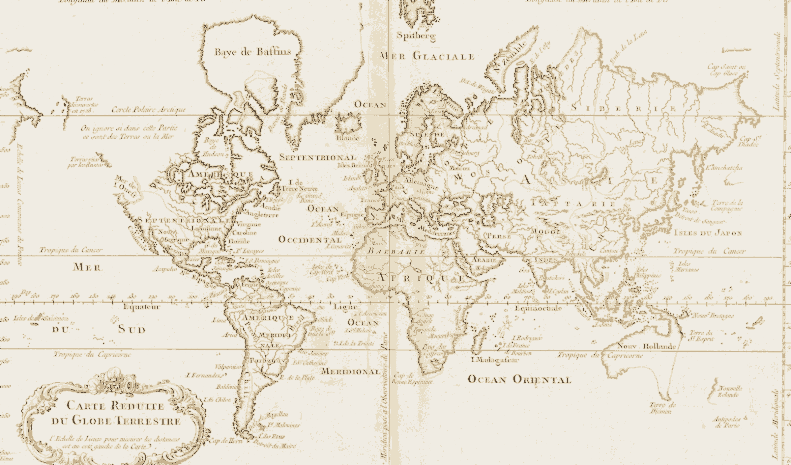

Pros: Crisp at any zoom · small file · clean modern feel · region polygons & adjacency lines integrated. Cons: Feels flat / blank-style · no atmosphere.
B · 1764 Bellin (cartoonified)
Public domain by age · 375 KB · Mercator · French place-names

Pros: Strong vintage character · evocative · real continent outlines · cartoonified into our cream/tan palette · French labels add charm to the "ruthless AI empire" theme. Cons: Mercator distorts polar regions · region overlays drift slightly because the underlying projection differs from the polygon coords (fixable) · 4× larger file.